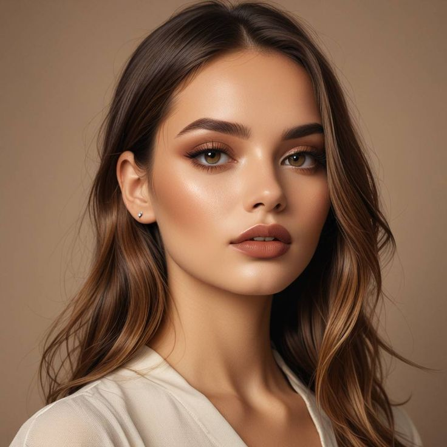
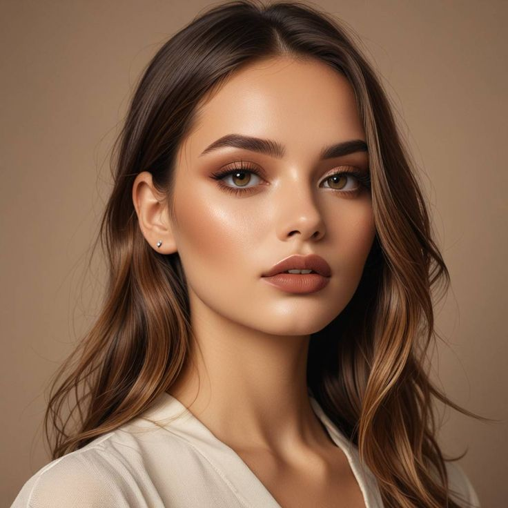
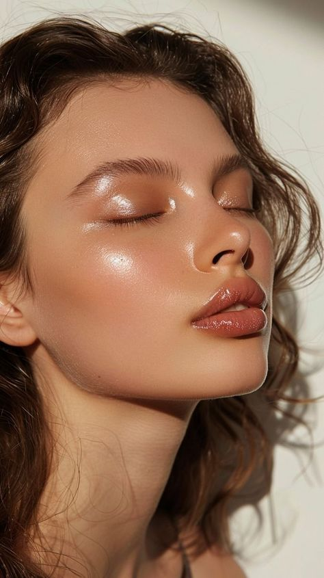
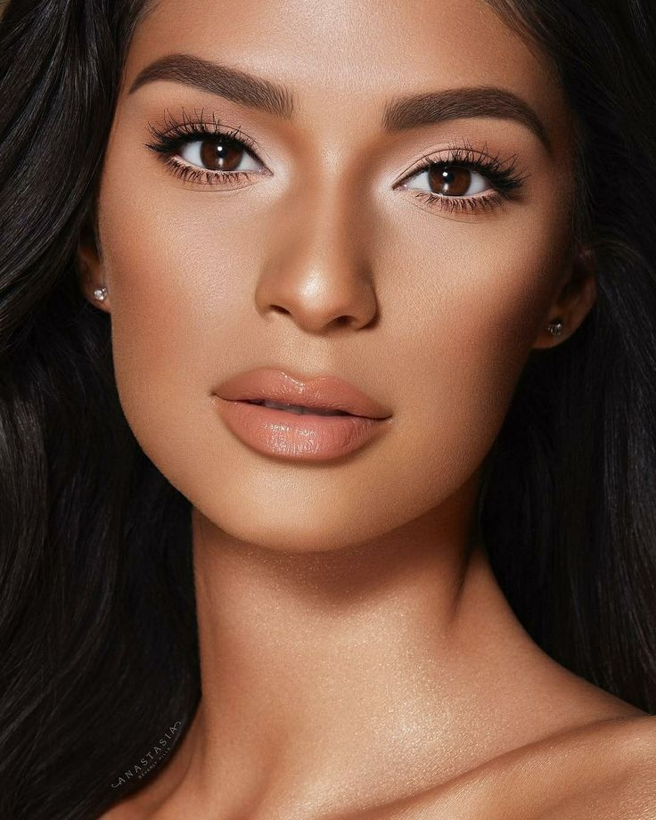
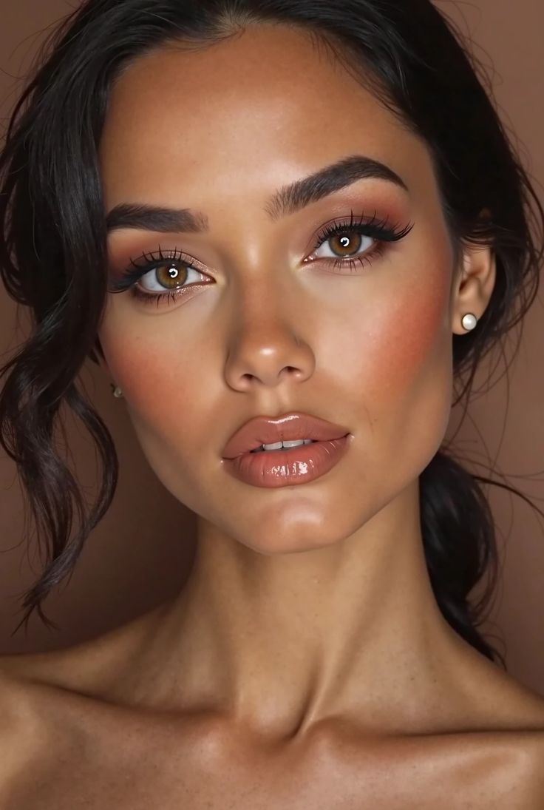
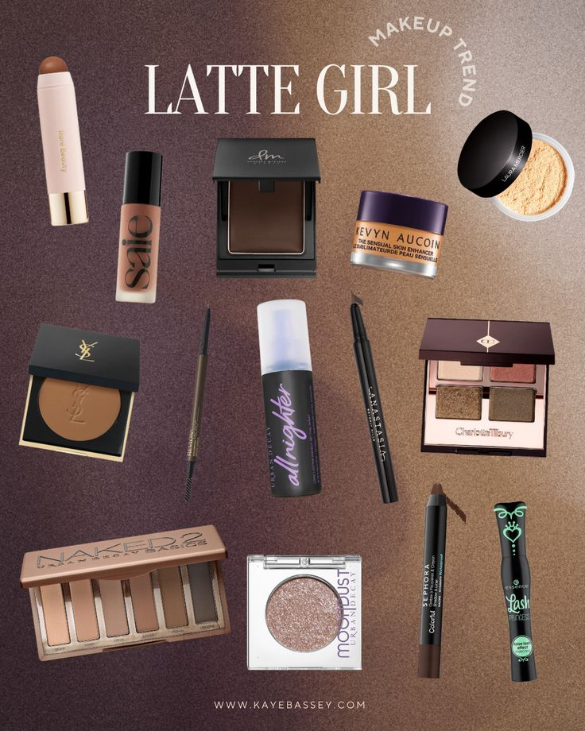

What is Latte Makeup?
Latte makeup is a trend inspired by the rich, milky tones of coffee – it focuses on using warm bronzes, browns, and golden hues to create a cohesive, sun-kissed glam that’s soft and natural.
If you love warm tones and cozy vibes, you're going to be obsessed with the Latte Makeup Trend! Think bronzed cheeks, creamy textures, and coffee-inspired hues that are perfect for Pakistani skin tones.
Latte makeup is a trend inspired by the rich, milky tones of coffee – it focuses on using warm bronzes, browns, and golden hues to create a cohesive, sun-kissed glam that’s soft and natural.
Use a glowy primer and mix a bit of liquid bronzer with your foundation or BB cream.
Skip harsh contouring – instead, apply bronzer generously on the cheeks, temples, and jawline.
Use shades like caramel, mocha, and gold to create a gradient effect. Add a little shimmer on the lids and inner corners.
Keep the brows natural and soft. Use brown eyeliner smudged along the lash line instead of a sharp black wing.
Go for warm-toned nude lip gloss or a soft brown matte lipstick to complete the monochrome look.
Latte makeup is the warm hug your face deserves – cozy, flattering, and effortlessly trendy!
Try this trend and tag us with your latte-inspired looks